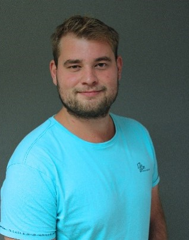

Angehender Applikationsentwickler

Diese Webseite gibt es zweimal, mit genau demselben Inhalt. Einmal habe ich sie selbst programmiert, Zeile für Zeile. Und einmal habe ich sie von einer KI bauen lassen. Ich wollte sehen, was der Unterschied ist.
| ✋ Handgemacht | 🤖 KI-Version | |
|---|---|---|
| Wer hat den Code geschrieben? | Ich | Die KI |
| Jede Zeile verstanden? | Ja | Erst nach dem Nachfragen |
| Dabei gelernt | Sehr viel | Ein paar neue Tricks |
| Minispiel | Mit Bildern, Endlos-Modus & Konfetti | Einfacher, mit Emojis |
| Design & Animationen | Schlicht | Dark Mode & Animationen |
| Dateien | HTML, CSS und JS getrennt | Alles in einer Datei |
Ich bin hier, um in die Applikationsentwicklung einzusteigen. Warum? Dazu eine kleine Geschichte, wie ich zu diesem Weg gekommen bin:
Mit 15 habe ich als Bäcker zu arbeiten angefangen. Mit 16 habe ich mir von meinem Lohn den ersten PC gekauft und selbst zusammengebaut. Zuerst nur für Computerspiele, aber bald wollte ich wissen, was im Hintergrund passiert. Mit 19 habe ich angefangen, YouTube-Tutorials nachzubauen.
Zum ersten Mal hatte ich richtig Zeit und habe ausprobiert, wie ein Spiel eigentlich funktioniert. Ich habe mit den Game-Engines Unity und Unreal Engine experimentiert.
2019 hat dann meine Firma zugesperrt, und mitten in der Corona-Pandemie brauchte ich dringend eine neue Arbeit. So bin ich Maurer geworden und habe sechs Jahre auf Baustellen gearbeitet, oft auswärts. Für das Programmieren blieb kaum Zeit.
Dann kamen Rückenprobleme dazu. Immer wieder musste ich für ein paar Wochen pausieren, habe es danach wieder probiert, und kurz darauf ging es wieder nicht. In diesen Pausen habe ich angefangen, Python zu lernen, weil es als besonders einsteigerfreundlich gilt. Vor Kurzem bin ich auf Godot gestoßen, dessen Sprache GDScript Python sehr ähnlich ist. Da stehe ich aber noch ganz am Anfang.
Als mein Arzt mir geraten hat, den Beruf als Maurer aufzugeben, habe ich aufgehört, bevor es schlimmer wurde, und die Gelegenheit genutzt: Jetzt mache ich beim BBRZ eine Umschulung zum Applikationsentwickler. Die Umschulung dauert ca. 2,5 Jahre. Mein Ziel ist, mein Hobby zum Beruf zu machen.
Wähle Schere, Stein oder Papier!